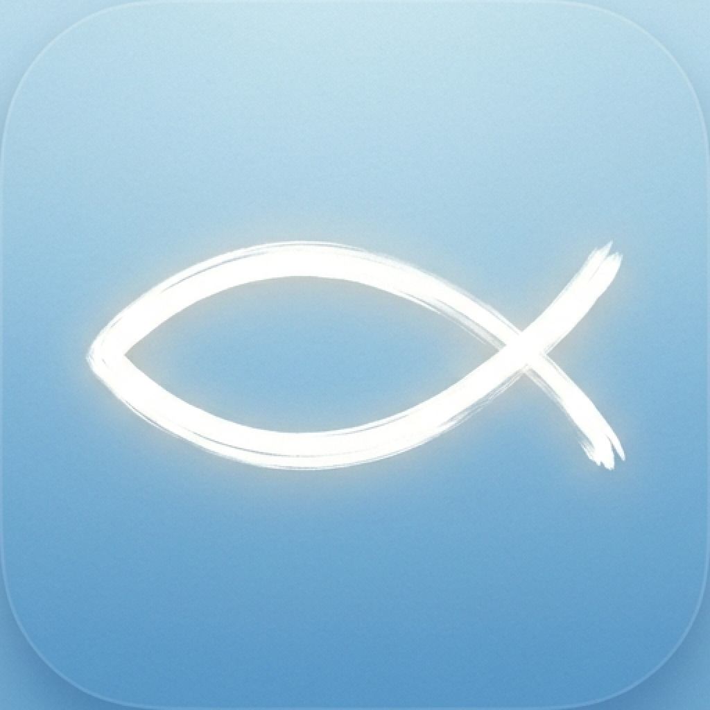
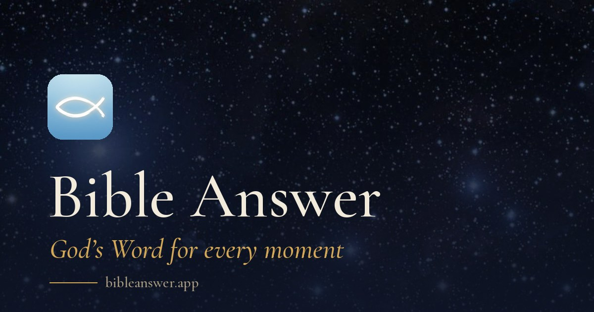

Press kit
Writing about Bible Answer
Descriptions you can copy, the facts, and the app icon. Everything here is for editorial use. This page is in English; the app and the site are in six languages.
In a few words
One line
Bible Answer is a free app for iPhone, iPad, Mac and Apple Watch. Say what is on your heart and get a verse word for word, what it means and a short prayer.
Short
Bible Answer is a free Bible app for iPhone, iPad, Mac and Apple Watch, in six languages. Say what is on your heart and it answers with a verse quoted word for word, what it means and a short prayer. Around that sit the whole Bible with three readings of every verse, a guide to the story, counsel by topic, reading plans, a verse for every day and a place to be quiet. No account, no ads, no tracking.
Long
Bible Answer is a free Bible app for iPhone, iPad, Apple Watch and Mac, in English, Portuguese (Brazil), Spanish, Russian, French and Filipino. You say or type what you are going through, such as anxious, lost or grateful, and the app returns a passage quoted word for word from a public-domain or openly licensed translation, a plain explanation of what it means and a short prayer. The reflection is written with an AI model and may be incomplete or mistaken, and the app says so; the verse itself is never generated. The app also holds the whole Bible with three readings of every verse (biblical, symbolic and application), a guide to the whole story, advice gathered under 24 topics, 5 reading plans, a verse for every day on the Home Screen, Lock Screen and Apple Watch, and music and nature sounds for quiet moments. There is no account, no advertising and no analytics. Bible Answer is free; anyone who wishes to support it can leave a tip once, and nothing is locked or unlocked by it. It is made by one independent developer.
Facts
- Name
- Bible Answer (two words)
- What it is
- A free Bible app: say what is on your heart, get a verse word for word, what it means and a short prayer
- Platforms
- iPhone, iPad, Apple Watch and Mac. Requires iOS 26, iPadOS 26, watchOS 26 or macOS 26, or later
- Languages
- English, Portuguese (Brazil), Spanish, Russian, French, Filipino
- Price
- Free. An optional one-time tip supports the app; nothing is locked or unlocked by it
- Privacy
- No account, no advertising, no analytics, no tracking across apps or websites
- How answers are made
- The verse is quoted from the translation unchanged. The reflection and the prayer are written with an AI model through the app's own server, and the app says they may be incomplete or mistaken
- Inside
- The whole Bible with three readings of every verse; a guide of 8 parts; 14 eras, 34 people, 50 words and 70 places explained; advice under 24 topics; 5 reading plans; a verse for every day; prayers for the hour; music and sounds of nature
- Version
- 1.0
- Availability
- App Store, launching soon
- Made by
- One independent developer
Bible texts, one for each language
- EnglishBerean Standard Bible
- Portuguese (Brazil)Bíblia Livre (CC BY 4.0)
- SpanishReina-Valera 1909
- RussianSynodal Translation (Синодальный перевод)
- FrenchLouis Segond 1910
- FilipinoULB, unfoldingWord (CC BY-SA 4.0)
Verses are quoted word for word from these translations. Please keep them unaltered and name the translation when you quote one.
Pictures





Using the name and the icon
Write the name as two words, Bible Answer. Use the icon as it is: no recolouring, cropping or effects. For the App Store badge, use Apple’s own artwork and follow Apple’s marketing guidelines.
News
- bibleanswer.app is open in six languagesThe Bible Answer website is live in English, Portuguese (Brazil), Spanish, Russian, French and Filipino, with a press kit, the privacy policy and support.
Contact
For an interview, a number, a quote or a screenshot in your language, write to support@bibleanswer.app.